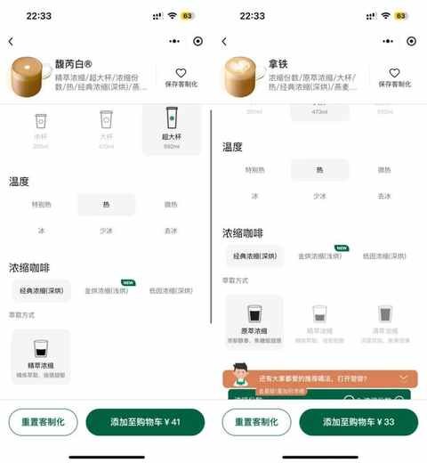
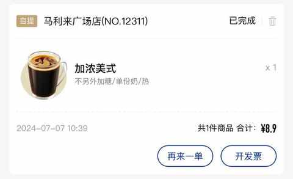

还记得上次喝星巴克是什么时候吗？
约斯特普通
2024-07-10
上周日的上午，送娃去辅导班，把车停在了一个光照充足的露天车位，顶着 36 度的高温，把车里的脚垫拿出来晾晒。
虽然一起也没 5 分钟就搞定，但还是会流不少汗，突然想来一杯星巴克的大杯或者超大杯咖啡。
打开星巴克的小程序就开始点单，选了几款之前喝过的，甚至还在小红书查了不同咖啡的热量，顺便把意向的咖啡先添加到购物车。
在选购的过程中有几个小发现：
- 星巴克的小程序越做越好，交互和设计都不错
- 咖啡价格似乎和 10 多年前一样，基本都要 30-40/杯
- 可定制的选项比其他家多，居然有热度的划分
- 没看到有主推的新品，依然是那几个系列

把多个单品都进行了定制化，添加到购物车，最终在临下单那一刻决定还是点瑞幸，虽然要大热天走个几百米。
决策的过程很快，内心戏是这样的：
- 价格方面：如果按超大杯 41元，一杯瑞幸最多 15 元就能搞定
- 需求方面：正好旁边是麦德龙，也想买两箱纯净水
- 理性方面：星巴克也不是非喝不可，更不需要在里面处理什么紧急事务
就我这个执行力，30 秒不到就已经下单好瑞幸，然后锁车去到麦德龙买水，把水放上车再去取咖啡，一气呵成满足了两个刚需。

总计花费 41.5 元，比一杯超大杯的星巴克多 0.5 元。
近几年，个人关于饮品的消费，变的越来越理性，特别是咖啡超过某一个价格不喝也行，除非是味道确实不错的类型，日常喝的最多的必然是速溶咖啡，偶尔会买点挂耳的，一周可能会买 2-3 次瑞幸，店是越来越多，有时候走错路都能碰到瑞幸的店。
简单点统计，如果每天 2 杯咖啡，一个月 60 杯：
其中 50 杯是速溶或者挂耳咖啡，在家里自行制作
大约 10 杯是从咖啡店买， 80% 是瑞幸，20% 是其他家
可能不少同龄人和我一样，十多年前到大城市喝的第一杯咖啡都是星巴克，关于咖啡的味蕾是被星巴克打开。
虽然咖啡的味道很奇怪，又苦又酸，喝多了还会睡不着觉，但这种有些陌生的味道慢慢变得越来越熟悉，再到某一天成为必需品。
近期一定去星巴克的店里面点一杯超大杯的咖啡，每年至少喝个 1 次。